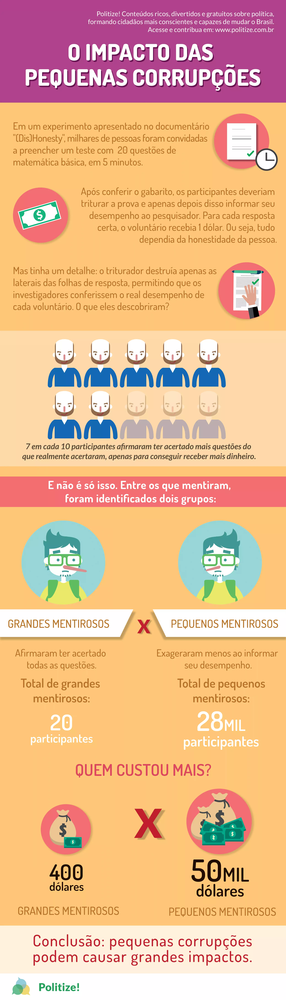

O que é corrupção
Corrupção é o efeito ou ato de corromper alguém ou algo, com a finalidade de obter vantagens em relação aos outros por meios considerados ilegais ou ilícitos. A corrupção é um meio ilegal de se conseguir algo, considerada grave crime em alguns países. Normalmente, a prática da corrupção está relacionada com a baixa instrução política da sociedade, que muitas vezes compactua com os sistemas corruptos.
A corrupção na política pode estar presente em todos os poderes do governo, como o Legislativo, Judiciário e Executivo. No entanto, a corrupção não existe apenas na política, mas também nas relações sociais humanas, como o trabalho
Pequenas corruções
Pequenas corrupções são violações, legais ou éticas, que podemos praticar diariamente. Conscientes ou não, dos danos que essas práticas podem gerar. A questão é saber em que medida esses atos se convertem num problema. E temos como exemplo temos “jeitinho brasileiro”, que pode se apresentar de uma forma inofensiva de resolver as coisas, a famosa “gambiarra”, tem outra conotação muito ruim, que é exatamente amenizar ou camuflar um ato ilícito, imoral e corrupto.
Dois exemplos: se optamos por subornar um guarda de trânsito para não sermos multados, evidentemente, que além da violação normativa, estamos criando uma situação que atinge diretamente a nós mesmos. Tanto num sentido positivo quanto negativo. Quando um funcionário público utiliza a sua influência para conseguir uma vaga em um hospital para um colega doente, então temos um ato que afeta a um maior número de cidadãos e interessados. Há outros pacientes que precisam da mesma vaga!!
Existem alguns comportamentos de corrupções pequenas, que são:
As pequenas possuem grande impacto e apesar delas se parecerem inofencivas elas trazem grandes consequencias, e isso pode ser explicado com pelo experimento feito por pesquisadores do projeto (Dis)honesty. Neste experimento avia um texte de 20 questões de matematica e possuiam baixa complexidade e os voluntários tinham apenas cinco minutos para resolvê-los. Quando ele terminacem eles poderiam se levantar, conferir o gabarito, triturar a prova e dizer ao investigador quantas questões acertou.
Para cada resposta correta, o voluntario ganhava um dólar. O que o voluntario não sabia é que o triturador mantinha as provas intactas, permitindo o pesquisador confrontar o resultado real com o informado. Desta forma, poderia se detectar quantos deles estavam trapaceando.
Das 40000 pessoas participantes do estudo, aproximadamente, 70 % delas trapacearam. Vinte voluntários, “os grandes trapaceiros”, disseram acertar tudo, que resultou em um $400. Os pequenos trapaceiros somavam 28000 indivíduos, os quais corresponderam a um custo de $50000 dólares ao estudo.
Esse estudo comprova como as pequenas corrupções podem ser mais eficazes do que as grandes, já que o impacto econômico dos pequenos trapaceiros foi maior do que o causado pelos grandes trapaceiros.
